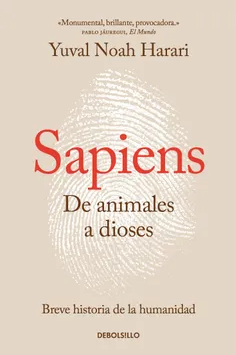

Sapiens. De animales a dioses: Breve historia de la humanidad es un libro escrito por Yuval Noah Harari, historiador y escritor israelí, publicado originalmente en hebreo en el 2011, y en traducido a otros 64 idiomas a partir del 2014.
Gente normal es una novela publicada por la escritora y guionista irlandesa Sally Rooney al año siguiente de la publicación de su primer libro Conversaciones entre amigos en 2017. Gente normal fue publicado por primera vez en español en octubre de 2019 por la editorial Literatura Random House.